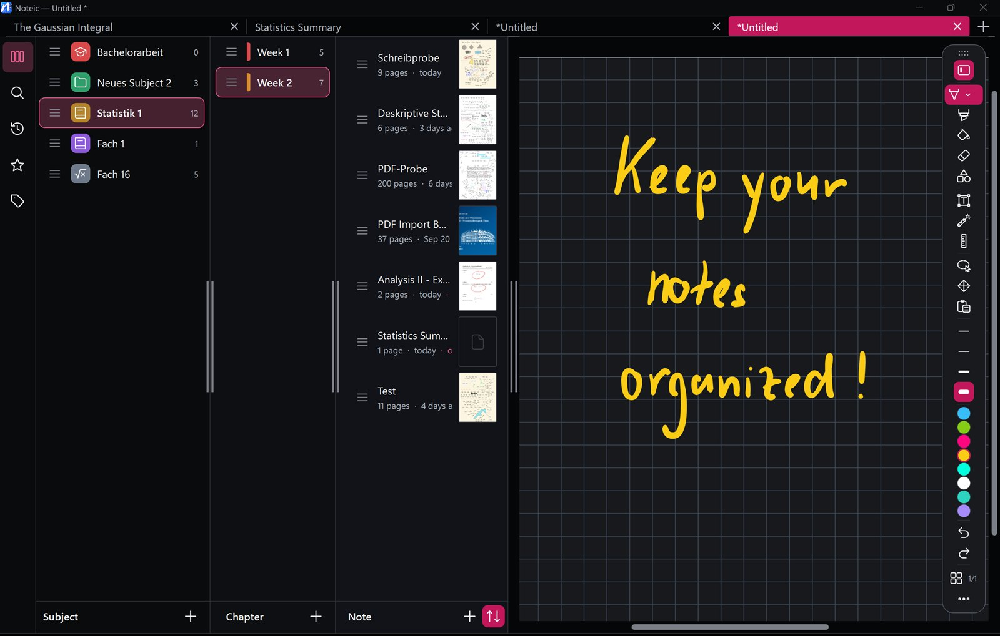

Library
Your notes, sorted like a binder: Subjects, Chapters and Notes, with colors, icons, tags and favorites.

Open the library#
Tap the library button at the start of the toolbar, or press Ctrl+B. Drag its edge to make it wider: a narrow library shows one or two columns, a wide one shows Subject, Chapter and Note side by side.
The icons on the left switch between Library, Search, Recently opened, Favorites and Notes by Tags.
Subjects, Chapters and Notes#
A Subject (for example a course) holds Chapters (for example weeks), and Chapters hold your Notes. On disk they are simply folders and .noteic files in your workspace.
- Tap + under Subject to create a Subject.
- Tap + under Chapter to add a Chapter to it.
- Tap + under Note, enter a name and tap Create.
A tap on a note selects it. To open it, right-click or press and hold the note and choose Open in new tab, Open in background tab or Open in new window.
The note menu#
Right-click or press and hold a note for:
- Add to Favorites, Rename, Move to… and Assign Tags
- Make sub-note of …: tucks a note under the one above it. Make main Note undoes it.
- Show in Explorer and Move to Recycle Bin
Subjects and Chapters have Color (24 colors or your own), and Subjects an Icon (70 to choose from). Chapters also offer Import PDF….
Drag the handle next to a row to put notes, Chapters and Subjects in your own order. Deleted items go to the Windows Recycle Bin, so you can restore them from there.
Search, recent, favorites and tags#
- Search finds Notes, Chapters and Subjects in the whole workspace by name.
- Recently opened lists your last 20 notes.
- Favorites lists the notes you starred.
- Tags: create tags with a name and one of eight colors in the tags view, then give them to notes with Assign Tags. Tap a tag to see its notes.
Workspaces#
A workspace is a folder with all your notes, for example one per semester. Each one keeps its own recent notes and favorites.
- Open the Subject switcher at the top of the library (or the workspace button above the Subjects in the wide view) and tap the workspace row.
- Pick a workspace from the list, or tap Add Workspace… to choose another folder. Nothing is moved.
- The × on a workspace removes it from the list. The folder and its notes stay untouched.